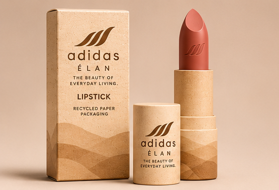
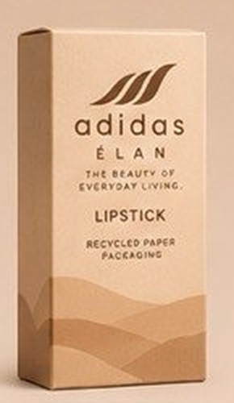

♻01 Collect and sort
Used paper is collected and sorted. Materials that can interfere with recycling are removed before the paper is processed.
ADIDAS ÉLAN BEAUTY
Three makeup essentials for your everyday routine, with packaging designed around giving paper a second life.
Explore the collection
THE COLLECTION
LIPS
Add a soft touch of colour to your lips. For a more defined look, follow your lip line before filling in the centre.
Explore the packaging storyOUR PACKAGING STORY
Follow the proposed journey from recovered paper to ÉLAN’s outer packaging. Explore each step to see how the packaging takes shape.

Used paper is collected and sorted. Materials that can interfere with recycling are removed before the paper is processed.
The sorted paper is mixed with water to separate its fibres. The pulp is then screened and cleaned.
The recovered fibres are formed into sheets, pressed and dried. The paperboard can then be cut and folded into outer cartons.
Separate the outer carton from the cosmetic container. Check your local recycling guidance for both items before putting them in the recycling bin.
ABOUT ÉLAN
Adidas ÉLAN is a student campaign concept that brings lipstick, blush and compact powder into a simple everyday routine. The collection explores how recycled paperboard could be used for the outer packaging.
ADIDAS ÉLAN BEAUTY